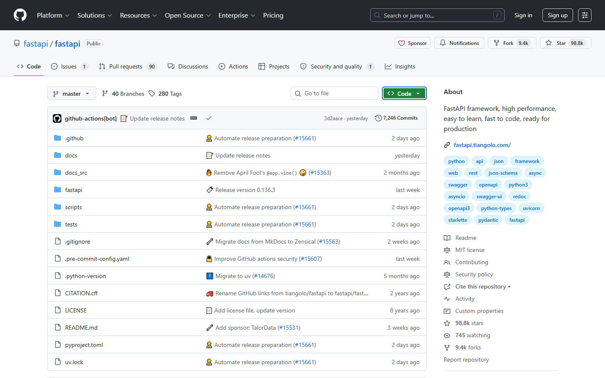
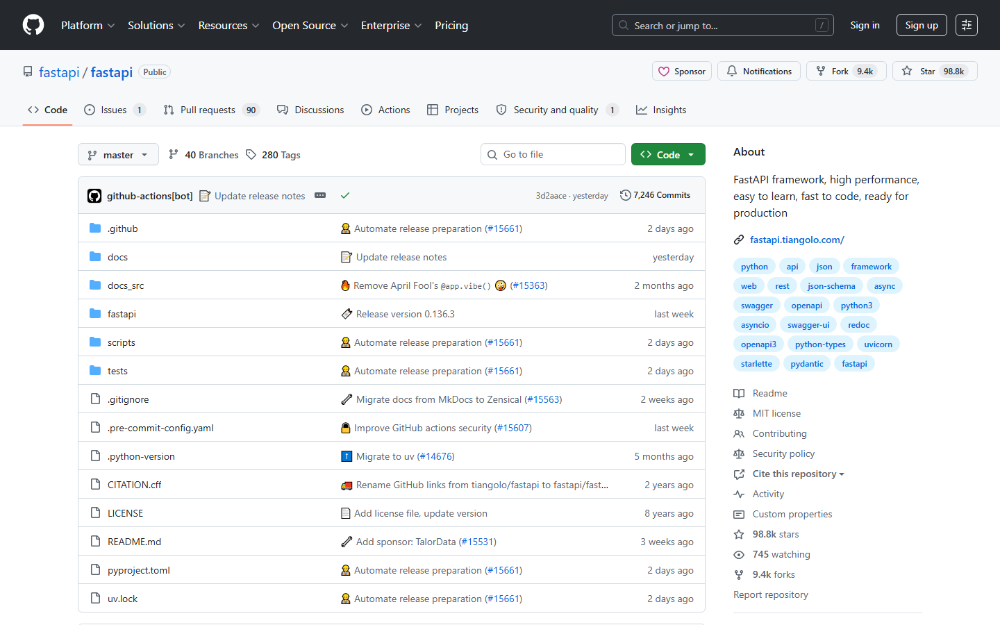

第六课：Pull Request（一）— Fork 与 Clone
时长：30 分钟 | 前置：第二课 | P0 词条：16 个 | 覆盖 UI 元素：14 个
学习目标
学完这节课，你能：
- 理解 Fork 的真正含义和完整工作流
- 区分 Upstream（上游仓库）和 Origin（你的 Fork）
- 使用 HTTPS 和 SSH 两种方式 Clone 仓库
- 理解为什么不能直接往别人仓库 Push 代码
0. 开场（2 min）
画面：打开一个知名开源项目（如 ant-design）

旁白：
"前面的课，我们都在'看'和'讨论'。但从这节课开始，我们要真正'动手'了。
GitHub 上最核心的工作流是：看到一个开源项目 → 想贡献代码 → 怎么把代码交上去？
答案就是三步：Fork → Clone → PR。
今天讲前两步。这两步你可能已经'做'过，但你未必真正'理解'。理解错了后面全错。"
1. 理解 GitHub 的权限模型（3 min）
画面：画图说明（可以用白板或简单的示意图）

1.1 GitHub 的代码归属
| 概念 | 说明 |
|---|---|
| 谁拥有仓库 | 创建仓库的那个人或组织 |
| 谁能 Push 代码 | 只有被明确授权的人（Collaborator） |
| 陌生人能 Push 吗 | 不能。你不是 Collaborator 就不能 Push |
关键理解：你在别人的仓库里没有写权限。你不能直接改他们的代码。Fork 就是解决这个问题的。
1.2 Fork 的比喻
"Fork 就像你看到了一个开源项目，你说'这个好，我想在上面加点功能'。
你不能直接在人家家里改东西，所以你把这个项目复制一份，搬到你自己家里。
在自己家里随便改。改完了，你再拿着你的改动去敲门：'这是我加的功能，要不要？'
这个过程就是：Fork（复制到你家）→ 修改 → PR（敲门）。"
2. Fork 操作详解（6 min）
画面：在目标仓库点击 Fork 按钮
2.1 Fork 操作步骤
| 步骤 | 操作 | 说明 |
|---|---|---|
| 1 | 打开目标仓库 | 比如 github.com/ant-design/ant-design |
| 2 | 点击右上角 Fork 按钮 | Fork 按钮在 Star 按钮右边 |
| 3 | Fork 窗口弹出 | 确认 Fork 信息 |
| 4 | Owner 选你自己 | 你的用户名 |
| 5 | Repository name | 默认和原仓库同名（不用改） |
| 6 | Description | 默认和原仓库一样（不用改） |
| 7 | Copy the main branch only | 默认勾选（只复制 main 分支，就够了） |
| 8 | 点 Create fork | 开始复制 |
操作演示：
【录屏】在 ant-design 点 Fork → 选自己的账号 → Create fork → 等待几秒 → 自动跳转到
github.com/你的用户名/ant-design
2.2 Fork 之后发生了什么
| 发生了什么 | 在哪里看 |
|---|---|
| 你的 GitHub 上多了一个同名仓库 | github.com/你的用户名/ant-design |
| 这个仓库是你的，你有完整控制权 | 你可以随便改、随便删（不影响原仓库） |
| 原仓库不受任何影响 | github.com/ant-design/ant-design 一切照旧 |
| 你的 Fork 自动标记来源 | 你的 Fork 页左上角显示 "forked from ant-design/ant-design" |
2.3 Fork 之后的页面
画面：Fork 后的仓库页面
| 元素 | 说明 |
|---|---|
| 左上角 | 仓库名格式 你的用户名/ant-design |
| 下面小字 | "forked from ant-design/ant-design" — 表明来源 |
| 中间提示条 | "This branch is up to date with ant-design:master" — 你的 Fork 和原仓库同步状态 |
| 旁边按钮 | Fetch upstream — 拉取上游更新（保留话题，后面讲） |
| Star / Fork / Watch 按钮 | 现在这是你的仓库了，数字从零开始 |
3. Upstream vs Origin（4 min）
画面：示意图，用箭头表示两个仓库的关系
3.1 两个重要概念
| 术语 | 英文 | 指的是 | 中文叫法 |
|---|---|---|---|
| Origin | origin | 你的 Fork | 远程源 / 自己的仓库 |
| Upstream | upstream | 原始仓库 | 上游仓库 / 原始仓库 |
3.2 为什么需要区分
"你现在有两份代码：
1. 原作者那份（Upstream）—— 你管不了，只能读
2. 你自己的那份（Origin）—— 你随便改
工作流是这样的：
1. 从你的 Origin Clone 到本地
2. 在本地修改代码
3. Push 到你的 Origin
4. 从你的 Origin 向 Upstream 发起 PR
那么问题来了：如果原仓库（Upstream）更新了，你的 Fork（Origin）不会自动更新。
你需要手动同步——这个在第八课讲。"
操作演示：
【录屏】在 Fork 的仓库页，指向 "forked from" 链接 → 点击回到原始仓库 → "这是 Upstream" → 回到你的 Fork → "这是 Origin"
4. Clone 操作详解（8 min）
画面：在你的 Fork 仓库页，点击绿色 Code 按钮
4.1 Clone 是什么
| 概念 | 说明 |
|---|---|
| Clone | 把 GitHub 上的代码下载到你的电脑上 |
| 和 Download ZIP 的区别 | Clone 会保留 Git 历史，Download ZIP 只下载当前快照 |
| 和 Fork 的区别 | Fork 是在 GitHub 服务器上复制，Clone 是下载到本地 |
Fork 是云端的，Clone 是本地的。Fork 之后才能 Clone 你自己的版本回来改。
4.2 HTTPS 方式 Clone
| 步骤 | 操作 |
|---|---|
| 1 | 点 Code 按钮 → 选 HTTPS 标签 |
| 2 | 复制 URL：https://github.com/你的用户名/仓库名.git |
| 3 | 打开终端，cd 到你想要放代码的目录 |
| 4 | 输入 git clone https://github.com/你的用户名/仓库名.git |
| 5 | 等待下载完成 |
| 优点 | 缺点 |
|---|---|
| 不需要额外配置 | 每次 Push 要输用户名和密码（Token） |
4.3 SSH 方式 Clone（推荐）
| 步骤 | 操作 |
|---|---|
| 1 | 确保已经配置了 SSH Key（第一课讲过） |
| 2 | 点 Code 按钮 → 选 SSH 标签 |
| 3 | 复制 URL：git@github.com:你的用户名/仓库名.git |
| 4 | 终端输入 git clone git@github.com:你的用户名/仓库名.git |
| 优点 | 缺点 |
|---|---|
| 一次配置终身免密 | 需要先配 SSH Key |
表：HTTPS vs SSH
| HTTPS | SSH | |
|---|---|---|
| 配置难度 | 简单 | 需要配 SSH Key |
| 每次 Push | 需要输 Token | 自动认证 |
| 防火墙友好 | 是（走 443 端口） | 有时被企业防火墙封 |
| 推荐场景 | 临时克隆、不常 Push | 日常开发 |
4.4 Clone 到你本地后
画面：展示 Clone 后在本地 IDE（比如 VS Code）打开的代码
| 发生了什么事 | 后续操作 |
|---|---|
| 代码下载到了你的电脑 | 可以用 IDE 打开编辑 |
| Git 历史也下载了 | 可以用 git log 看提交历史 |
| 远程地址自动设为 Origin | git remote -v 可以看到指向你的 Fork |
5. 把 Fork 和 Clone 串起来 — 完整流程演示（5 min）
操作演示：
【录屏】全程无剪接
- 在 ant-design 点击 Fork → 选自己 → Create fork
- Fork 完成 → 进入自己的 Fork 页面
- 点 Code → 复制 SSH URL → 终端
git clone git@github.com:... - Clone 完成 →
cd ant-design→ls看文件列表 git remote -v→ 解释 origin 指向自己的 Fork- 结束："现在代码在你电脑上了，可以随便改。下节课讲怎么把改动变成 PR。"
6. 常见误区（2 min）
| 误区 | 正确理解 |
|---|---|
| "Fork 就是 Clone" | Fork 是云端复制，Clone 是本地下载 |
| "Fork 之后原仓库更新我的也自动更新" | 不会自动更新，需要手动 Sync |
| "Fork 了就一定要提 PR" | 不。Fork 只是复制了一份，你不改不提交都行 |
| "Clone 别人的仓库就能直接 Push" | 不能。你得是 Collaborator 或者 Clone 的是自己的仓库 |
| "Fork 要钱的" | 不要。Fork 多少个都免费 |
课后作业
- 打开 ant-design（或任意你感兴趣的开源项目），Fork 一份到自己名下
- Clone 你 Fork 的仓库到本地（用 SSH 方式，如果还没配 SSH Key 就先用 HTTPS）
- 在终端运行
git remote -v，截图确认 origin 指向你的 Fork - 在你本地随便修改一个文件（比如加一行注释），但不要 Push（下节课做）
本课术语速查
{.glossary-table}
| 英文 | 中文 | 出现位置 |
|---|---|---|
| Fork | 复刻 / 分叉 | 仓库右上角按钮 |
| Create fork | 创建复刻 | Fork 弹出窗口按钮 |
| Forked from | 复刻自 | 你的 Fork 页面左上 |
| Origin | 远程源（你的 Fork） | git remote -v 输出 |
| Upstream | 上游仓库（原始仓库） | git remote 概念 |
| Clone | 克隆 / 下载到本地 | Code 按钮 → HTTPS/SSH |
| HTTPS URL | HTTPS 地址 | Code 按钮下拉 |
| SSH URL | SSH 地址 | Code 按钮下拉 |
| Download ZIP | 下载压缩包 | Code 按钮下拉底部 |
| git clone | Git 克隆命令 | 终端命令 |
| git remote | Git 查看远程地址命令 | 终端命令 |
| Fetch upstream | 拉取上游更新 | Fork 页面提示条 |
| Collaborator | 协作者 | 有 Push 权限的人 |